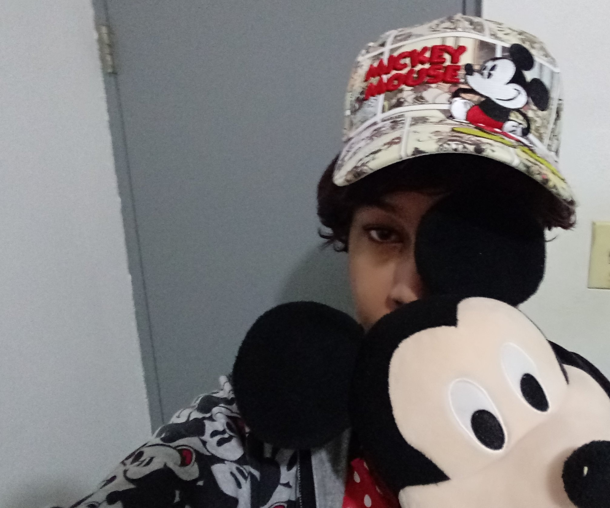
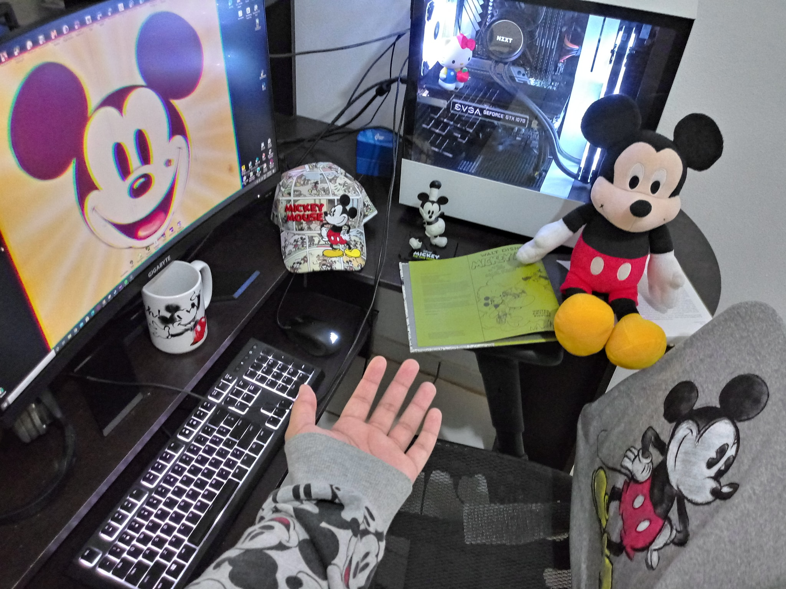
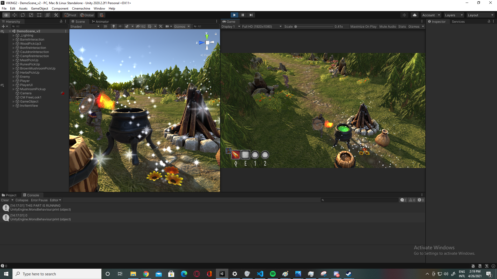
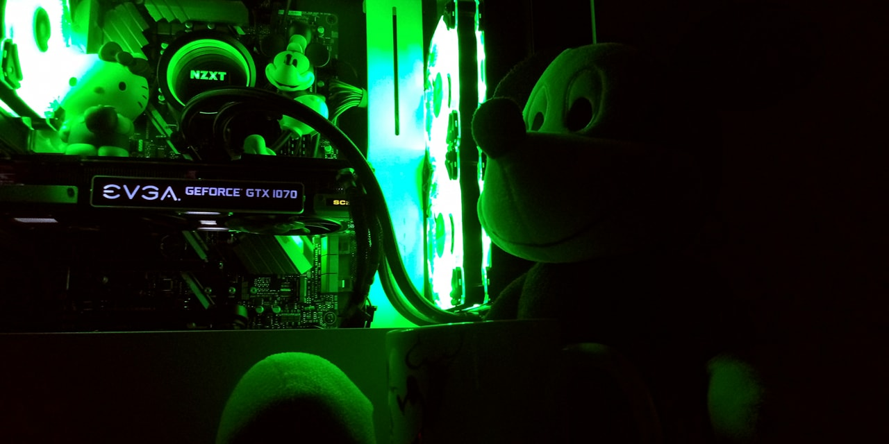

¡Hola, soy Kevin J. Gutiérrez Fuentes(pero pueden llamarme, y por favor, sí llámenme Kenny)! Nací el 13 de octubre del 1999, en Fajardo, Puerto Rico. Estudio Diseño y Desarrollo de Videojuegos en la Universidad Interamericana de Puerto Rico, aquí en el recinto de Fajardo y estoy en mi 4to años, aunque también estoy tomando Ciencias de Cómputo como minor.

Mis intereses son bastante variados. Soy muy fan de caricaturas antiguas, especialmente las de Mickey Mouse, Tom & Jerry y los Looney Tunes originales. Colecciono objetos de Mickey Mouse y administro una página de Facebook en la cual publico información sobre la historia Mickey Mouse, incluyendo sus cortos, comics, mercancía, promociones, anuncios, y demás. También me gusta mucho Hello Kitty. Me fascina leer sobre historia en general, especialmente la historia de la Antigua Roma y el Primer Imperio Francés, y como pasatiempo estudio y leo sobre la ingeniería nuclear.

Me encanta la música, especialmente el Technical Death Metal por su velocidad, su complejidad y sus influencias de la música clásica, y es un tipo de música que me ayuda en todo, desde la concentración hasta para relajarme, por más irónico que parezca. Me gustan mucho los videojuegos, mi favorito siendo los juegos de Fallout, Sonic, Battlefield, Monster Hunter, No Man's Sky, Assassin's Creed, Minecraft y Mass Effect, y actualmente estoy desarrollando un videojuego en Unity, llamado Ragnarok.

También tengo como hobby el construir computadoras, y ya le he construído varias computadoras a mis amigos. La mía la construí en el 2018 y tiene un AMD Ryzen 7 2700 overclockeado a 4.2GHz con refrigeración líquida(NZXT Kraken X53), una GTX 1070 SC2 de EVGA, un motherboard ASUS Prime X470-Pro, 32GB de RAM a 3000MHz y un PSU de 650w.

De hecho esa es la razón por la cual decidí hacer este proyecto sobre esa temática, porque me encanta
todo lo relacionado a la tecnología. Desde pequeño he trabajado con electrónicos, ya sea arreglándolos
o modificándolos, y pienso que sería buena idea tener una tienda o una página web en donde ofrezco
servicios relacionados a eso.
Aquí están mis redes sociales:
Correo Electrónico -----> KennyEisenhower@yahoo.com
Steam ID ---------------> Lucius Vulpes Fleiwerks Mouse
Epic Games ID ----------> fleiwerks
Origin ID --------------> FoxPony
Ubisoft ID -------------> F0XB0I
Xbox -------------------> 火凱利#3191
PSN --------------------> KJGF-GF
Discord ----------------> Lucius Vulpes Caesar#2062
Perfil de Facebook -----> https://www.facebook.com/LuciusVulpes/
Perfil de YouTube ------> https://www.youtube.com/channel/UCmhhLaONBGPIcG43PcBkrNA
Perfil de Twitter ------> https://twitter.com/LVulpes1928
Perfil de Instagram ----> https://www.instagram.com/fleiwerks/ (Inactiva)
Perfil de Bandcamp -----> https://bandcamp.com/lucyvulpes (Abandonada)
Playlist de Spotify ----> https://open.spotify.com/playlist/6EWocqa2Hgsroayjrvc1fY?si=1DW6scGBSjqMwzMByYg9aw